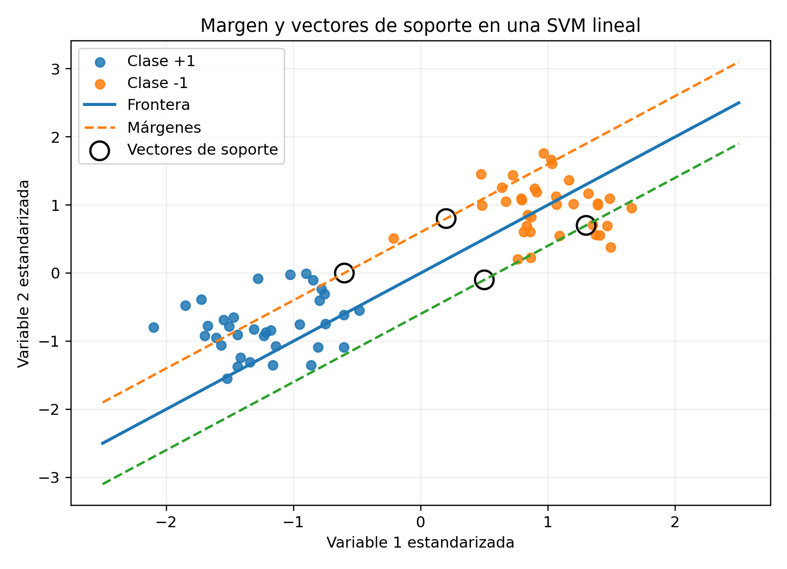

Las máquinas de vectores de soporte buscan una frontera con margen grande y pueden incorporar transformaciones no lineales mediante kernels. Su formulación conecta optimización convexa, regularización y teoría de generalización (Cortes y Vapnik 1995; Vapnik 1998).
Las máquinas de vectores de soporte, conocidas como SVM por Support Vector Machines, son métodos de aprendizaje supervisado diseñados principalmente para clasificación, aunque también existen extensiones para regresión.
La idea fundamental consiste en encontrar una frontera de decisión que separe las clases con el mayor margen posible. En el caso linealmente separable, SVM selecciona entre todos los hiperplanos separadores aquel que maximiza la distancia mínima a las observaciones de entrenamiento. Las observaciones que determinan esta frontera reciben el nombre de vectores de soporte.
Cuando las clases no pueden separarse perfectamente, se introducen variables de holgura y una penalización que permite ciertos errores. Para fronteras no lineales, SVM utiliza funciones kernel, que permiten trabajar implícitamente en espacios de características de dimensión mayor sin calcular explícitamente la transformación.
ImportanteDefinición esencial
Una SVM busca una frontera de decisión con margen grande.
Objetivos
Al finalizar el capítulo, el lector podrá:
formular un clasificador lineal;
definir un hiperplano y su margen;
derivar el problema de margen máximo;
identificar vectores de soporte;
formular el margen duro;
introducir variables de holgura;
formular el margen suave;
interpretar el parámetro de costo;
comprender la pérdida hinge;
derivar el problema dual;
interpretar las condiciones KKT;
comprender el truco kernel;
distinguir kernels lineal, polinomial y radial;
formular SVM multiclase;
analizar escalamiento, regularización y selección de hiperparámetros;
relacionar SVM con minimización del riesgo empírico.
El margen depende de la escala de las variables. Por ello, SVM suele requerir centrado y estandarización, especialmente con kernels que utilizan distancias.

Figura 15.1: La SVM lineal busca una frontera con margen máximo y depende de los vectores de soporte.
Este es un problema de optimización convexa cuadrática.
Vectores de soporte
Definición 15.2 Los vectores de soporte son las observaciones que se encuentran sobre los márgenes o dentro de ellos y que determinan la solución óptima.
Algoritmo SVM-LinealEntrada: D = {(x_i, y_i)}_{i=1}^n, con y_i ∈ {-1,+1}, C > 0Salida: hiperplano separador \hat f(x)=sign(w^T x + b)1. Resolver el problema de optimización minimizar_{w,b,ξ} (1/2)||w||^2 + C\sum_{i=1}^n ξ_i sujeto a y_i(w^T x_i + b) ≥ 1 - ξ_i, ξ_i ≥ 0.2. Obtener la solución (\hat w, \hat b, \hat ξ).3. Identificar los vectores de soporte: i tales que y_i(\hat w^T x_i + \hat b) ≤ 1.4. Definir la regla de decisión \hat y(x)=sign(\hat w^T x + \hat b).5. En la versión con kernel, reemplazar x_i^T x_j por K(x_i,x_j).
Ventajas de SVM
fundamento matemático sólido;
optimización convexa;
solución global;
buen desempeño en alta dimensión;
capacidad para fronteras no lineales;
control explícito de regularización;
dependencia solo de vectores de soporte.
Limitaciones de SVM
requiere escalamiento;
selección de kernel e hiperparámetros puede ser costosa;
menor interpretabilidad;
entrenamiento costoso con muestras muy grandes;
probabilidades requieren calibración;
sensible a clases desbalanceadas;
puede ser difícil explicar fronteras no lineales.
Maldición de la dimensionalidad
SVM puede funcionar bien cuando \(p\) es grande, especialmente con regularización adecuada.
Sin embargo, variables irrelevantes y ruido pueden deteriorar el margen y aumentar la complejidad.
La selección de variables sigue siendo importante.
Clases desbalanceadas
Puede utilizarse una penalización diferente por clase:
\[
C_+
\]
para la clase positiva y
\[
C_-
\]
para la negativa.
La función objetivo se modifica para asignar mayor costo a errores en la clase crítica.
Robustez frente a valores atípicos
El margen suave permite tolerar errores, pero valores atípicos pueden influir fuertemente cuando \(C\) es grande.
Reducir \(C\) aumenta regularización y puede mejorar robustez.
Explique por qué \(C\) y \(\gamma\) deben elegirse conjuntamente.
Describa un posible patrón de sobreajuste.
Ejercicio aplicado
Se desea clasificar accidentes severos mediante SVM usando:
velocidad;
hora;
condiciones meteorológicas;
tipo de vialidad;
iluminación;
presencia de peatones.
Diseñe un análisis que incluya:
codificación de variables;
escalamiento;
partición de datos;
comparación entre kernel lineal y radial;
selección de \(C\) y \(\gamma\);
validación cruzada anidada;
ajuste por desbalance;
matriz de confusión;
sensibilidad y especificidad;
AUC;
calibración;
número de vectores de soporte;
comparación con Random Forest y regresión logística;
limitaciones interpretativas.
Resumen
En este capítulo se desarrolló la formulación matemática de las máquinas de vectores de soporte.
Se estudió el hiperplano separador, el margen geométrico, el problema de margen máximo y los vectores de soporte. También se derivaron las formulaciones primal y dual, las condiciones KKT y el margen suave mediante variables de holgura.
Posteriormente se introdujeron la pérdida hinge, el parámetro de costo, el truco kernel, los kernels lineal, polinomial y radial, así como la selección de hiperparámetros.
Finalmente, se analizaron clasificación multiclase, SVR, escalamiento, calibración, desbalance de clases, complejidad computacional y comparación con regresión logística y Random Forest.
Referencias del capítulo
Los fundamentos se apoyan en Cortes y Vapnik (1995), Vapnik (1998), Bishop (2006) y Hastie et al. (2009).
Bishop, Christopher M. 2006. Pattern Recognition and Machine Learning. Springer.
Hastie, Trevor, Robert Tibshirani, y Jerome Friedman. 2009. The Elements of Statistical Learning: Data Mining, Inference, and Prediction. 2.ª ed. Springer. https://doi.org/10.1007/978-0-387-84858-7.
Vapnik, Vladimir N. 1998. Statistical Learning Theory. Wiley.
Ejecutar el código
# Máquinas de vectores de soporte\index{Máquinas de vectores de soporte}, SVM {#sec-svm}## Introducción {.unnumbered}Las máquinas de vectores de soporte buscan una frontera con margen\index{Margen} grande y pueden incorporar transformaciones no lineales mediante kernel\index{Kernels}s. Su formulación conecta optimización convexa, regularización y teoría de generalización [@cortes1995support; @vapnik1998statistical].Las máquinas de vectores de soporte, conocidas como SVM por *Support Vector Machines*, son métodos de aprendizaje supervisado diseñados principalmente para clasificación, aunque también existen extensiones para regresión.La idea fundamental consiste en encontrar una frontera de decisión que separe las clases con el mayor margen posible. En el caso linealmente separable, SVM selecciona entre todos los hiperplanos separadores aquel que maximiza la distancia mínima a las observaciones de entrenamiento. Las observaciones que determinan esta frontera reciben el nombre de vectores de soporte.Cuando las clases no pueden separarse perfectamente, se introducen variables de holgura y una penalización que permite ciertos errores. Para fronteras no lineales, SVM utiliza funciones kernel, que permiten trabajar implícitamente en espacios de características de dimensión mayor sin calcular explícitamente la transformación.::: {.callout-important title="Definición esencial" appearance="default" icon="true"}Una SVM busca una frontera de decisión con margen grande.:::## Objetivos {.unnumbered}Al finalizar el capítulo, el lector podrá:1. formular un clasificador lineal;2. definir un hiperplano y su margen;3. derivar el problema de margen máximo;4. identificar vectores de soporte;5. formular el margen duro;6. introducir variables de holgura;7. formular el margen suave;8. interpretar el parámetro de costo;9. comprender la pérdida hinge;10. derivar el problema dual;11. interpretar las condiciones KKT;12. comprender el truco kernel;13. distinguir kernels lineal, polinomial y radial;14. formular SVM multiclase;15. analizar escalamiento, regularización y selección de hiperparámetros;16. relacionar SVM con minimización del riesgo empírico.## Clasificación binaria {.unnumbered}Considérese una muestra$$\mathcal{D}_n=\left\{(\mathbf{x}_i,y_i)\right\}_{i=1}^{n},$$donde$$\mathbf{x}_i\in\mathbb{R}^{p}$$y$$y_i\in\{-1,+1\}.$$Se desea construir una función$$g:\mathbb{R}^{p}\to\{-1,+1\}.$$## Hiperplano separador {.unnumbered}Un hiperplano en $\mathbb{R}^{p}$ se define mediante$$\mathbf{w}^{\mathsf T}\mathbf{x}+b=0,$$donde:- $\mathbf{w}\in\mathbb{R}^{p}$ es el vector normal;- $b\in\mathbb{R}$ es el intercepto.La regla de clasificación es$$g(\mathbf{x})=\operatorname{sign}\left(\mathbf{w}^{\mathsf T}\mathbf{x}+b\right).$$## Regiones de decisión {.unnumbered}El hiperplano divide el espacio en:$$\mathbf{w}^{\mathsf T}\mathbf{x}+b>0,$$correspondiente a la clase $+1$, y$$\mathbf{w}^{\mathsf T}\mathbf{x}+b<0,$$correspondiente a la clase $-1$.## Separabilidad lineal {.unnumbered}::: {#def-separabilidad-lineal}La muestra es linealmente separable si existen $\mathbf{w}$ y $b$ tales que$$y_i\left(\mathbf{w}^{\mathsf T}\mathbf{x}_i+b\right)>0$$para toda observación $i$.:::Esta condición indica que cada punto queda en el lado correcto del hiperplano.## Escala del hiperplano {.unnumbered}Los pares$$(\mathbf{w},b)$$y$$(c\mathbf{w},cb),\qquad c>0,$$definen el mismo hiperplano.Por ello, se necesita fijar una escala para formular el margen.## Distancia de un punto al hiperplano {.unnumbered}La distancia perpendicular de $\mathbf{x}_i$ al hiperplano es$$d_i=\frac{\left|\mathbf{w}^{\mathsf T}\mathbf{x}_i+b\right|}{\|\mathbf{w}\|_2}.$$La distancia firmada es$$\frac{\mathbf{w}^{\mathsf T}\mathbf{x}_i+b}{\|\mathbf{w}\|_2}.$$## Margen funcional {.unnumbered}El margen funcional de la observación $i$ es$$\widehat{\gamma}_i=y_i\left(\mathbf{w}^{\mathsf T}\mathbf{x}_i+b\right).$$Depende de la escala de $\mathbf{w}$ y $b$.::: {.callout-important title="Escalamiento de la representación" appearance="default" icon="true"}El margen depende de la escala de las variables. Por ello, SVM suele requerir centrado y estandarización, especialmente con kernels que utilizan distancias.:::{#fig-svm-margen width=84% fig-alt="Dos clases separadas por una recta central y dos márgenes paralelos"}## Margen geométrico {.unnumbered}El margen geométrico es$$\gamma_i=\frac{y_i\left(\mathbf{w}^{\mathsf T}\mathbf{x}_i+b\right)}{\|\mathbf{w}\|_2}.$$Este margen no cambia si $\mathbf{w}$ y $b$ se multiplican por una constante positiva.## Margen del clasificador {.unnumbered}El margen total respecto de la muestra es$$\gamma=\min_{i}\gamma_i.$$SVM busca maximizar esta cantidad.## Normalización canónica {.unnumbered}Se escalan $\mathbf{w}$ y $b$ para que las observaciones más cercanas satisfagan$$y_i\left(\mathbf{w}^{\mathsf T}\mathbf{x}_i+b\right)=1.$$Entonces todas las observaciones cumplen$$y_i\left(\mathbf{w}^{\mathsf T}\mathbf{x}_i+b\right)\geq 1.$$## Hiperplanos del margen {.unnumbered}Los hiperplanos paralelos que contienen las observaciones más cercanas son$$\mathbf{w}^{\mathsf T}\mathbf{x}+b=1$$y$$\mathbf{w}^{\mathsf T}\mathbf{x}+b=-1.$$La distancia entre ambos es$$\frac{2}{\|\mathbf{w}\|_2}.$$## Problema de margen máximo {.unnumbered}Maximizar el margen equivale a minimizar la norma de $\mathbf{w}$:$$\min_{\mathbf{w},b}\frac{1}{2}\|\mathbf{w}\|_2^2$$sujeto a$$y_i\left(\mathbf{w}^{\mathsf T}\mathbf{x}_i+b\right)\geq 1,\qquadi=1,\ldots,n.$$Este es un problema de optimización convexa cuadrática.## Vectores de soporte {.unnumbered}::: {#def-vectores-soporte}Los vectores de soporte son las observaciones que se encuentran sobre los márgenes o dentro de ellos y que determinan la solución óptima.:::En el caso separable, satisfacen$$y_i\left(\mathbf{w}^{\mathsf T}\mathbf{x}_i+b\right)=1.$$Las observaciones alejadas del margen no cambian directamente la posición del hiperplano óptimo.## Interpretación geométrica {.unnumbered}SVM no intenta simplemente encontrar cualquier frontera que separe las clases. Busca la frontera con mayor espacio libre alrededor.Un margen grande se asocia con:- mayor robustez;- menor sensibilidad a perturbaciones pequeñas;- mejor capacidad de generalización.## Formulación lagrangiana {.unnumbered}Se introducen multiplicadores$$\alpha_i\geq 0.$$El Lagrangiano es$$\mathcal{L}(\mathbf{w},b,\boldsymbol{\alpha})=\frac{1}{2}\|\mathbf{w}\|_2^2-\sum_{i=1}^{n}\alpha_i\left[y_i\left(\mathbf{w}^{\mathsf T}\mathbf{x}_i+b\right)-1\right].$$## Condición respecto del vector normal {.unnumbered}Derivando respecto de $\mathbf{w}$,$$\nabla_{\mathbf{w}}\mathcal{L}=\mathbf{w}-\sum_{i=1}^{n}\alpha_i y_i\mathbf{x}_i.$$Igualando a cero,$$\mathbf{w}=\sum_{i=1}^{n}\alpha_i y_i\mathbf{x}_i.$$Por tanto, el vector normal es una combinación lineal de observaciones de entrenamiento.## Condición respecto del intercepto {.unnumbered}Derivando respecto de $b$,$$\frac{\partial\mathcal{L}}{\partial b}=-\sum_{i=1}^{n}\alpha_i y_i.$$Por tanto,$$\sum_{i=1}^{n}\alpha_i y_i=0.$$## Problema dual de margen duro {.unnumbered}Sustituyendo las condiciones anteriores, se obtiene$$\max_{\boldsymbol{\alpha}}\left[\sum_{i=1}^{n}\alpha_i-\frac{1}{2}\sum_{i=1}^{n}\sum_{j=1}^{n}\alpha_i\alpha_jy_i y_j\mathbf{x}_i^{\mathsf T}\mathbf{x}_j\right]$$sujeto a$$\alpha_i\geq 0$$y$$\sum_{i=1}^{n}\alpha_i y_i=0.$$## Condiciones de complementariedad {.unnumbered}Las condiciones KKT incluyen$$\alpha_i\left[y_i\left(\mathbf{w}^{\mathsf T}\mathbf{x}_i+b\right)-1\right]=0.$$Si$$\alpha_i>0,$$entonces la observación se encuentra sobre el margen y es vector de soporte.## Función de decisión dual {.unnumbered}Como$$\mathbf{w}=\sum_{i=1}^{n}\alpha_i y_i\mathbf{x}_i,$$la función de decisión es$$f(\mathbf{x})=\sum_{i=1}^{n}\alpha_i y_i\mathbf{x}_i^{\mathsf T}\mathbf{x}+b.$$Solo las observaciones con $\alpha_i>0$ contribuyen.## Datos no separables {.unnumbered}En la práctica, las clases pueden solaparse o contener ruido.El margen duro puede:- no tener solución;- depender excesivamente de observaciones atípicas;- producir una frontera inestable.Para resolverlo se introduce el margen suave.## Variables de holgura {.unnumbered}Se definen$$\xi_i\geq 0$$y se permite$$y_i\left(\mathbf{w}^{\mathsf T}\mathbf{x}_i+b\right)\geq1-\xi_i.$$Interpretación:- $\xi_i=0$: clasificación correcta fuera o sobre el margen;- $0<\xi_i<1$: clasificación correcta dentro del margen;- $\xi_i=1$: observación sobre la frontera;- $\xi_i>1$: observación mal clasificada.## Problema de margen suave {.unnumbered}La formulación primal es$$\min_{\mathbf{w},b,\boldsymbol{\xi}}\left\{\frac{1}{2}\|\mathbf{w}\|_2^2+C\sum_{i=1}^{n}\xi_i\right\}$$sujeto a$$y_i\left(\mathbf{w}^{\mathsf T}\mathbf{x}_i+b\right)\geq1-\xi_i,$$$$\xi_i\geq 0.$$## Interpretación del parámetro C {.unnumbered}El parámetro$$C>0$$controla el costo de violar el margen.Un valor grande de $C$:- penaliza fuertemente errores;- intenta clasificar correctamente casi todos los puntos;- puede producir un margen estrecho;- puede aumentar varianza.Un valor pequeño:- permite más violaciones;- produce mayor regularización;- puede generar un margen más ancho;- puede aumentar sesgo.## Pérdida hinge {.unnumbered}La pérdida hinge es$$L_{\text{hinge}}(y,f(\mathbf{x}))=\max\left\{0,1-yf(\mathbf{x})\right\}.$$El problema puede escribirse como$$\min_{\mathbf{w},b}\left\{\frac{1}{2}\|\mathbf{w}\|_2^2+C\sum_{i=1}^{n}\max\left(0,1-y_i\left[\mathbf{w}^{\mathsf T}\mathbf{x}_i+b\right]\right)\right\}.$$## Interpretación como riesgo regularizado {.unnumbered}Dividiendo por $n$ y reparametrizando,$$\min_{\mathbf{w},b}\left\{\frac{1}{n}\sum_{i=1}^{n}L_{\text{hinge}}\left(y_i,\mathbf{w}^{\mathsf T}\mathbf{x}_i+b\right)+\lambda\|\mathbf{w}\|_2^2\right\}.$$SVM es un problema de minimización de riesgo empírico regularizado.## Dual del margen suave {.unnumbered}El problema dual es$$\max_{\boldsymbol{\alpha}}\left[\sum_{i=1}^{n}\alpha_i-\frac{1}{2}\sum_{i=1}^{n}\sum_{j=1}^{n}\alpha_i\alpha_jy_i y_j\mathbf{x}_i^{\mathsf T}\mathbf{x}_j\right]$$sujeto a$$0\leq\alpha_i\leq C$$y$$\sum_{i=1}^{n}\alpha_i y_i=0.$$La cota superior $C$ aparece como consecuencia de las variables de holgura.## Interpretación de los multiplicadores {.unnumbered}En el margen suave:- $\alpha_i=0$: observación fuera del margen;- $0<\alpha_i<C$: observación sobre el margen;- $\alpha_i=C$: observación dentro del margen o mal clasificada.## Fronteras no lineales {.unnumbered}Un hiperplano en el espacio original puede ser insuficiente.Se introduce una transformación$$\phi:\mathbb{R}^{p}\to\mathcal{H},$$donde $\mathcal{H}$ es un espacio de características, posiblemente de dimensión muy alta.El clasificador lineal en $\mathcal{H}$ es$$f(\mathbf{x})=\mathbf{w}^{\mathsf T}\phi(\mathbf{x})+b.$$## Truco kernel {.unnumbered}En el problema dual, las observaciones aparecen únicamente mediante productos internos.Se define un kernel$$K(\mathbf{x},\mathbf{z})=\phi(\mathbf{x})^{\mathsf T}\phi(\mathbf{z}).$$Así, no es necesario calcular explícitamente $\phi(\mathbf{x})$.La función de decisión se convierte en$$f(\mathbf{x})=\sum_{i=1}^{n}\alpha_i y_iK(\mathbf{x}_i,\mathbf{x})+b.$$## Kernel lineal {.unnumbered}$$K(\mathbf{x},\mathbf{z})=\mathbf{x}^{\mathsf T}\mathbf{z}.$$Corresponde a una frontera lineal en el espacio original.## Kernel polinomial {.unnumbered}$$K(\mathbf{x},\mathbf{z})=\left(\gamma\mathbf{x}^{\mathsf T}\mathbf{z}+r\right)^d.$$Parámetros:- $d$: grado;- $\gamma$: escala;- $r$: término independiente.Permite representar interacciones polinomiales.## Kernel radial {.unnumbered}El kernel radial gaussiano es$$K(\mathbf{x},\mathbf{z})=\exp\left(-\gamma\|\mathbf{x}-\mathbf{z}\|_2^2\right).$$También puede parametrizarse mediante$$\gamma=\frac{1}{2\sigma^2}.$$## Interpretación del parámetro gamma {.unnumbered}Un valor grande de $\gamma$:- produce influencia muy local;- permite fronteras complejas;- puede aumentar sobreajuste.Un valor pequeño:- produce influencia más amplia;- genera fronteras suaves;- puede aumentar subajuste.## Kernel sigmoidal {.unnumbered}$$K(\mathbf{x},\mathbf{z})=\tanh\left(\gamma\mathbf{x}^{\mathsf T}\mathbf{z}+r\right).$$No todos los valores de parámetros garantizan que sea un kernel válido.## Condición de Mercer {.unnumbered}Para representar un producto interno válido, el kernel debe generar una matriz de Gram semidefinida positiva.Para una muestra,$$\mathbf{K}_{ij}=K(\mathbf{x}_i,\mathbf{x}_j).$$Debe cumplirse$$\mathbf{a}^{\mathsf T}\mathbf{K}\mathbf{a}\geq 0$$para todo vector $\mathbf{a}$.## Matriz de Gram {.unnumbered}La matriz$$\mathbf{K}=\begin{pmatrix}K(\mathbf{x}_1,\mathbf{x}_1) & \cdots & K(\mathbf{x}_1,\mathbf{x}_n)\\\vdots & \ddots & \vdots\\K(\mathbf{x}_n,\mathbf{x}_1) & \cdots & K(\mathbf{x}_n,\mathbf{x}_n)\end{pmatrix}$$resume todos los productos internos en el espacio transformado.## Cálculo del intercepto {.unnumbered}Para un vector de soporte con$$0<\alpha_i<C,$$se cumple$$y_i\left[\sum_{j=1}^{n}\alpha_j y_jK(\mathbf{x}_j,\mathbf{x}_i)+b\right]=1.$$Por tanto,$$b=y_i-\sum_{j=1}^{n}\alpha_j y_jK(\mathbf{x}_j,\mathbf{x}_i).$$Habitualmente se promedia entre varios vectores de soporte.## Escalamiento de variables {.unnumbered}SVM depende de productos internos y distancias.Si las variables presentan escalas distintas, una puede dominar el kernel.Por ello, suele utilizarse$$z_{ij}=\frac{x_{ij}-\overline{x}_j}{s_j}.$$El escalamiento debe aprenderse únicamente con datos de entrenamiento.## Selección de hiperparámetros {.unnumbered}Los principales hiperparámetros son:- $C$;- tipo de kernel;- $\gamma$;- grado polinomial;- coeficiente independiente.La selección se realiza mediante validación cruzada.## Búsqueda conjunta {.unnumbered}Para kernel radial, deben seleccionarse conjuntamente$$(C,\gamma).$$Una rejilla habitual utiliza escalas logarítmicas, por ejemplo:$$C\in\left\{2^{-5},2^{-3},\ldots,2^{15}\right\},$$$$\gamma\in\left\{2^{-15},2^{-13},\ldots,2^{3}\right\}.$$Estas rejillas son orientativas.## Número de vectores de soporte {.unnumbered}El número de vectores de soporte influye en:- complejidad del modelo;- tiempo de predicción;- sensibilidad al ruido.Una solución con muchos vectores de soporte suele ser más compleja.## Probabilidades {.unnumbered}SVM produce una puntuación$$f(\mathbf{x}),$$no una probabilidad directa.Para obtener probabilidades se utilizan métodos de calibración, como la calibración de Platt:$$P(Y=1\mid f)=\frac{1}{1+\exp(Af+B)}.$$También puede utilizarse regresión isotónica.## Clasificación multiclase {.unnumbered}SVM es esencialmente binario.Las estrategias comunes son:- uno contra el resto;- uno contra uno.## Uno contra el resto {.unnumbered}Para $C$ clases se entrenan $C$ clasificadores:$$c\quad\text{contra}\quad\mathcal{Y}\setminus\{c\}.$$La predicción utiliza la mayor puntuación.## Uno contra uno {.unnumbered}Se entrena un clasificador por cada par de clases.El número de clasificadores es$$\binom{C}{2}=\frac{C(C-1)}{2}.$$La clase final se decide mediante votación.## SVM para regresión {.unnumbered}La regresión por vectores de soporte se denomina SVR.Se utiliza la pérdida insensible $\varepsilon$:$$L_\varepsilon(y,f(\mathbf{x}))=\max\left\{0,|y-f(\mathbf{x})|-\varepsilon\right\}.$$Los errores dentro de un tubo de anchura $\varepsilon$ no reciben penalización.## Formulación de SVR {.unnumbered}La formulación primal es$$\min_{\mathbf{w},b,\boldsymbol{\xi},\boldsymbol{\xi}^{*}}\left\{\frac{1}{2}\|\mathbf{w}\|_2^2+C\sum_{i=1}^{n}(\xi_i+\xi_i^*)\right\}$$sujeto a$$y_i-\left(\mathbf{w}^{\mathsf T}\phi(\mathbf{x}_i)+b\right)\leq\varepsilon+\xi_i,$$$$\left(\mathbf{w}^{\mathsf T}\phi(\mathbf{x}_i)+b\right)-y_i\leq\varepsilon+\xi_i^*,$$$$\xi_i,\xi_i^*\geq 0.$$## Seudocódigo formal {.unnumbered}::: {.callout-note title="Seudocódigo matemático formal" appearance="default" icon="true"}```textAlgoritmo SVM-LinealEntrada: D = {(x_i, y_i)}_{i=1}^n, con y_i ∈ {-1,+1}, C > 0Salida: hiperplano separador \hat f(x)=sign(w^T x + b)1. Resolver el problema de optimización minimizar_{w,b,ξ} (1/2)||w||^2 + C\sum_{i=1}^n ξ_i sujeto a y_i(w^T x_i + b) ≥ 1 - ξ_i, ξ_i ≥ 0.2. Obtener la solución (\hat w, \hat b, \hat ξ).3. Identificar los vectores de soporte: i tales que y_i(\hat w^T x_i + \hat b) ≤ 1.4. Definir la regla de decisión \hat y(x)=sign(\hat w^T x + \hat b).5. En la versión con kernel, reemplazar x_i^T x_j por K(x_i,x_j).```:::## Ventajas de SVM {.unnumbered}1. fundamento matemático sólido;2. optimización convexa;3. solución global;4. buen desempeño en alta dimensión;5. capacidad para fronteras no lineales;6. control explícito de regularización;7. dependencia solo de vectores de soporte.## Limitaciones de SVM {.unnumbered}1. requiere escalamiento;2. selección de kernel e hiperparámetros puede ser costosa;3. menor interpretabilidad;4. entrenamiento costoso con muestras muy grandes;5. probabilidades requieren calibración;6. sensible a clases desbalanceadas;7. puede ser difícil explicar fronteras no lineales.## Maldición de la dimensionalidad {.unnumbered}SVM puede funcionar bien cuando $p$ es grande, especialmente con regularización adecuada.Sin embargo, variables irrelevantes y ruido pueden deteriorar el margen y aumentar la complejidad.La selección de variables sigue siendo importante.## Clases desbalanceadas {.unnumbered}Puede utilizarse una penalización diferente por clase:$$C_+$$para la clase positiva y$$C_-$$para la negativa.La función objetivo se modifica para asignar mayor costo a errores en la clase crítica.## Robustez frente a valores atípicos {.unnumbered}El margen suave permite tolerar errores, pero valores atípicos pueden influir fuertemente cuando $C$ es grande.Reducir $C$ aumenta regularización y puede mejorar robustez.## Relación con regresión logística {.unnumbered}Ambos modelos lineales utilizan$$f(\mathbf{x})=\mathbf{w}^{\mathsf T}\mathbf{x}+b.$$Regresión logística:- minimiza pérdida logarítmica;- modela probabilidades directamente;- utiliza todas las observaciones.SVM:- minimiza pérdida hinge;- maximiza margen;- depende principalmente de vectores de soporte.## Relación con perceptrón {.unnumbered}El perceptrón actualiza parámetros cuando una observación es mal clasificada.SVM añade:- maximización del margen;- regularización explícita;- optimización convexa;- kernels.## Relación con redes neuronales {.unnumbered}SVM utiliza una transformación fija determinada por el kernel.Las redes neuronales aprenden representaciones internas mediante sus parámetros.SVM suele ser competitivo en muestras medianas; las redes profundas dominan problemas con grandes cantidades de datos no estructurados.## Complejidad computacional {.unnumbered}El entrenamiento clásico requiere resolver un problema cuadrático.El costo puede crecer entre$$O(n^2)$$y$$O(n^3),$$dependiendo del algoritmo y los datos.La memoria puede requerir almacenar una matriz de Gram de tamaño$$n\times n.$$## Métodos de optimización {.unnumbered}Entre los algoritmos utilizados se encuentran:- programación cuadrática;- SMO;- descenso por subgradiente;- Pegasos;- aproximaciones lineales;- métodos distribuidos.## SMO {.unnumbered}El algoritmo SMO resuelve iterativamente pequeños subproblemas que involucran dos multiplicadores $\alpha_i$ a la vez.Esto evita resolver directamente un gran problema cuadrático.## SVM lineal para grandes datos {.unnumbered}Cuando el kernel es lineal, pueden utilizarse algoritmos especializados que operan directamente en el espacio primal.Estos métodos son más eficientes cuando:- $n$ es grande;- $p$ es alto;- no se necesita una frontera no lineal.## Interpretación del margen como confianza {.unnumbered}La magnitud$$|f(\mathbf{x})|$$indica distancia funcional respecto de la frontera.Un valor grande sugiere una decisión más alejada del hiperplano, pero no constituye una probabilidad calibrada.## Conexión con R {.unnumbered}```{r}#| eval: falselibrary(e1071)datos <-data.frame(severo =factor(c("No", "No", "No", "Sí", "Sí", "Sí", "No", "Sí")),velocidad =c(35, 42, 48, 70, 80, 75, 55, 90),humedad =c(60, 55, 58, 40, 35, 42, 50, 30))modelo_lineal <-svm( severo ~ velocidad + humedad,data = datos,kernel ="linear",cost =1,scale =TRUE,probability =TRUE)summary(modelo_lineal)predict( modelo_lineal, datos,probability =TRUE)modelo_radial <-svm( severo ~ velocidad + humedad,data = datos,kernel ="radial",cost =10,gamma =0.5,scale =TRUE)# Selección de hiperparámetrosajuste <-tune( svm, severo ~ velocidad + humedad,data = datos,kernel ="radial",ranges =list(cost =c(0.1, 1, 10, 100),gamma =c(0.01, 0.1, 0.5, 1) ))ajuste$best.parametersajuste$best.model```## Ejemplo de hiperplano {.unnumbered}Considere$$\mathbf{w}=\begin{pmatrix}2\\-1\end{pmatrix},\qquadb=-3.$$La frontera es$$2x_1-x_2-3=0.$$Para el punto$$\mathbf{x}=\begin{pmatrix}3\\1\end{pmatrix},$$la puntuación es$$f(\mathbf{x})=2(3)-1-3=2.$$Por tanto, se clasifica como $+1$.La distancia al hiperplano es$$\frac{|2|}{\sqrt{2^2+(-1)^2}}=\frac{2}{\sqrt{5}}.$$## Ejemplo de pérdida hinge {.unnumbered}Supóngase$$y=+1.$$Si$$f(\mathbf{x})=1.5,$$entonces$$L_{\text{hinge}}=\max(0,1-1.5)=0.$$Si$$f(\mathbf{x})=0.4,$$entonces$$L_{\text{hinge}}=1-0.4=0.6.$$Si$$f(\mathbf{x})=-0.8,$$entonces$$L_{\text{hinge}}=1-(-0.8)=1.8.$$## Errores frecuentes {.unnumbered}1. aplicar SVM sin escalar variables;2. seleccionar $C$ y $\gamma$ con el conjunto de prueba;3. interpretar la puntuación como probabilidad;4. usar un kernel complejo sin validación;5. ignorar el desbalance de clases;6. confundir un valor grande de $C$ con mayor regularización;7. interpretar vectores de soporte como observaciones necesariamente atípicas;8. ignorar variables irrelevantes;9. utilizar una rejilla lineal en lugar de logarítmica;10. concluir causalidad a partir de la frontera.## Ejercicios conceptuales {.unnumbered}1. Explique qué representa un hiperplano.2. ¿Qué diferencia existe entre margen funcional y geométrico?3. ¿Por qué maximizar el margen equivale a minimizar $\|\mathbf{w}\|_2^2$?4. ¿Qué son los vectores de soporte?5. Compare margen duro y margen suave.6. ¿Qué función cumple $C$?7. Explique la pérdida hinge.8. ¿Por qué el problema dual permite utilizar kernels?9. ¿Qué efecto tiene $\gamma$ en un kernel radial?10. ¿Por qué SVM requiere escalamiento?11. Compare SVM y regresión logística.12. ¿Cómo se extiende SVM a múltiples clases?## Ejercicio de distancia al hiperplano {.unnumbered}Sea$$\mathbf{w}=\begin{pmatrix}1\\2\end{pmatrix},\qquadb=-4.$$Para los puntos$$\mathbf{x}_1=(2,1),\qquad\mathbf{x}_2=(0,3),$$calcule:1. la puntuación;2. la clase predicha;3. la distancia al hiperplano.## Ejercicio de margen {.unnumbered}Supóngase que el vector normal satisface$$\|\mathbf{w}\|_2=4.$$1. Calcule la anchura total del margen.2. Calcule la distancia de cada hiperplano marginal a la frontera central.3. Repita para $\|\mathbf{w}\|_2=2$.4. Interprete el cambio.## Ejercicio de pérdida hinge {.unnumbered}Calcule la pérdida para:| $y$ | $f(\mathbf{x})$ ||---:|---:|| 1 | 2.0 || 1 | 0.5 || 1 | -0.4 || -1 | -1.5 || -1 | 0.2 |## Ejercicio de kernel radial {.unnumbered}Considere$$\mathbf{x}=(1,2),\qquad\mathbf{z}=(3,1),\qquad\gamma=0.5.$$1. Calcule $\|\mathbf{x}-\mathbf{z}\|_2^2$.2. Calcule el kernel radial.3. Repita con $\gamma=2$.4. Interprete el efecto de $\gamma$.## Ejercicio de selección {.unnumbered}Se obtienen los siguientes errores de validación:| $C$ | $\gamma$ | Error CV ||---:|---:|---:|| 0.1 | 0.01 | 0.22 || 1 | 0.01 | 0.17 || 10 | 0.01 | 0.15 || 1 | 0.1 | 0.13 || 10 | 0.1 | 0.11 || 100 | 0.1 | 0.14 || 10 | 1 | 0.18 |1. Seleccione la mejor combinación.2. Explique por qué $C$ y $\gamma$ deben elegirse conjuntamente.3. Describa un posible patrón de sobreajuste.## Ejercicio aplicado {.unnumbered}Se desea clasificar accidentes severos mediante SVM usando:- velocidad;- hora;- condiciones meteorológicas;- tipo de vialidad;- iluminación;- presencia de peatones.Diseñe un análisis que incluya:1. codificación de variables;2. escalamiento;3. partición de datos;4. comparación entre kernel lineal y radial;5. selección de $C$ y $\gamma$;6. validación cruzada anidada;7. ajuste por desbalance;8. matriz de confusión;9. sensibilidad y especificidad;10. AUC;11. calibración;12. número de vectores de soporte;13. comparación con Random Forest y regresión logística;14. limitaciones interpretativas.## Resumen {.unnumbered}En este capítulo se desarrolló la formulación matemática de las máquinas de vectores de soporte.Se estudió el hiperplano separador, el margen geométrico, el problema de margen máximo y los vectores de soporte. También se derivaron las formulaciones primal y dual, las condiciones KKT y el margen suave mediante variables de holgura.Posteriormente se introdujeron la pérdida hinge, el parámetro de costo, el truco kernel, los kernels lineal, polinomial y radial, así como la selección de hiperparámetros.Finalmente, se analizaron clasificación multiclase, SVR, escalamiento, calibración, desbalance de clases, complejidad computacional y comparación con regresión logística y Random Forest.## Referencias del capítulo {.unnumbered}Los fundamentos se apoyan en @cortes1995support, @vapnik1998statistical, @bishop2006pattern y @hastie2009elements.